배포 요청과 준비 대기를 비교 단위로 분리
기준 방식은 Deployment별 적용·대기를 반복하고, 비교 방식은 세트 YAML 적용 뒤 Available을 병렬 대기합니다. 여러 준비 대기를 겹칠 수 있지만 다중 문서 apply는 원자적 트랜잭션이 아니며 두 스크립트의 처리 순서도 다릅니다.
Infrastructure / Joint Research
임무 단계에 따른 이종 모델 세트 전환 아키텍처를 공동 연구했습니다. Python·kubectl 배포 프로토타입과 실험 결과를 공개 아카이브로 정리했습니다.
Architecture / Flow

여러 모델을 개별적으로 바꾸는 작업을 넘어, 상황에 필요한 모델을 세트로 전환하는 구조를 연구했습니다. 임무 단계에 따른 이종 모델 세트의 오케스트레이션을 제안했습니다.
Python·kubectl을 사용한 배포 프로토타입에서 순차 적용·준비 대기와 세트 단위 적용·병렬 대기를 비교했습니다. 모의 Deployment를 사용해 서로 다른 전환 절차를 실행했습니다.
각 방식의 기존 10회 실험 결과와 원본 코드·설정을 보존하고, 결과 재집계 도구와 검증 테스트를 정리했습니다. 측정 조건과 계측의 한계를 함께 설명했습니다.
논문에서 제안한 아키텍처, 공개 프로토타입에 구현한 부분, 실험에서 관측한 결과를 구분했습니다. 재현 가능한 자료와 해석 범위를 함께 남기는 연구 경험입니다.
Follow the data
nginx Deployment 세트를 YAML로 정의하고 초기 세트가 Available 상태가 되도록 준비합니다.
순차 적용·대기와 세트 단위 적용·병렬 대기를 별도 Python 스크립트로 실행하도록 구성했습니다.
각 방식의 총 전환 시간과 부분 구간 관측값을 10회씩 JSON으로 기록했습니다.
별도 분석 도구가 원본 JSON을 재집계하고 유효성·파일 해시를 확인합니다. 부분 구간 정의 차이도 명시합니다.
Engineering decisions
기준 방식은 Deployment별 적용·대기를 반복하고, 비교 방식은 세트 YAML 적용 뒤 Available을 병렬 대기합니다. 여러 준비 대기를 겹칠 수 있지만 다중 문서 apply는 원자적 트랜잭션이 아니며 두 스크립트의 처리 순서도 다릅니다.
기존 측정 스크립트와 JSON은 legacy에 보존하고 analyze.py는 파일 읽기만 수행합니다. 클러스터를 조작하지 않고 수치를 검산할 수 있으나 기존 기록에 없는 실행 환경·이벤트 로그를 복구할 수는 없습니다.
비교 스크립트는 Available 대기 실패 시 새 세트 삭제와 이전 YAML 재적용을 시도합니다. 복구 완료를 기다리거나 실패를 주입하는 테스트는 없어 롤백 보장으로 소개할 수 없습니다.
코드 기준 38aa9bd · 구조와 주요 실행 경로를 정적으로 검토했습니다.